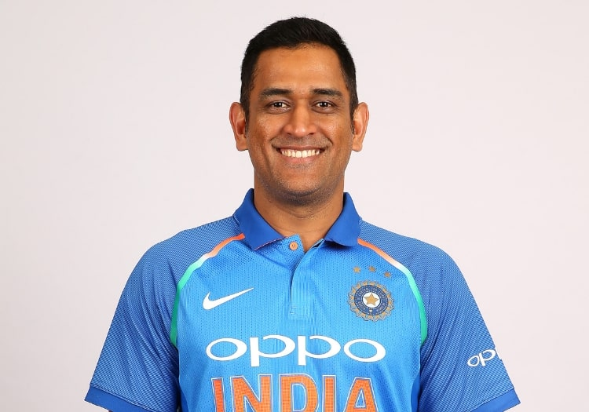
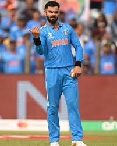
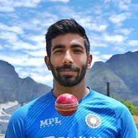

My Favourite Sports
My favorite sport is Cricket.Cricket is a popular sport played between two teams, each consisting of eleven players. Originating in England, it has grown into a global phenomenon, especially in countries like India, Australia, and South Africa. The game is played on a circular field with a rectangular 22-yard pitch at its center. Teams take turns to bat and bowl, aiming to score runs and dismiss opposing players. Formats like Test matches, One-Day Internationals, and T20s cater to different fan preferences. Known for its strategic depth and thrilling moments, cricket unites millions worldwide, celebrating teamwork, skill, and sportsmanship.
Some of my favorite players
- MS Dhoni 
- Virat Kohli 
- Jasprit Bumrah 